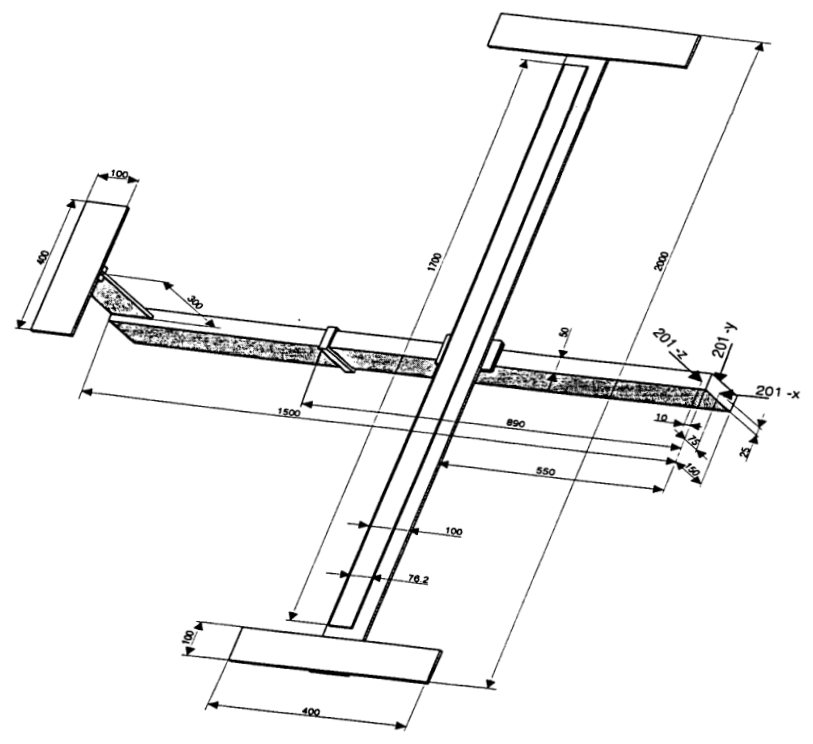

GARTEUR SM-AG19 Testbed: Modal analysis
Description
This virtual test application is based on the test article used by the GARTEUR Structures & Materials Action Group 19 which organized a Round Robin exercise where 12 European laboratories tested a single structure between 1995 and 1997. The benchmark structure was a laboratory structure built to simulate the dynamic behaviour of an aeroplane. The structure was initially built for a benchmark study on experimental modal analysis conducted by the Structures and Materials Action Group (SM-AG19) of the Group for Aeronautical Research and Technology in EURope (GARTEUR). The test-bed was designed and manufactured by ONERA, France.

References
- [GARTEUR] Ground Vibration Test Techniques, compiled by A Gravelle, GARTEUR Structures & Materials Action Group 19 Technical report TP-115, 1999.
- [BW] Etienne Balmes, Jan R. Wright, GARTEUR GROUP ON GROUND VIBRATION TESTING | RESULTS FROM THE TEST OF A SINGLE STRUCTURE BY 12 LABORATORIES IN EUROPE, Proceedings of DETC'97, 1997 ASME Design Engineering Technical Conferences, September 14-17, 1997, Sacramento, California.
- [3M] 3M(TM) Viscoelastic Damping Polymer 112 Series, Technical Data, May 2017.
Goals
- Show how to construct model from multiple connected beams.
- Demonstrate the use of massless connectors.
- Demonstrate the use of point masses.
- Demonstrate the use of grounded springs.
- Illustrate verification of the solution of the free vibration problem.
#Geometry of the testbed airplane.
The aluminum testbed was a rather simple structure which was reasonably dynamically representative of a simple airplane structure GARTEUR. It was composed of several beams simulating a fuselage with wings and a tail. Wing tip drums allowed to adjust bending and torsion frequencies similarly to airplane ones, with some very close modal frequencies.

The script included below defines the geometry of the structure, the cross-sectional properties, the connectivity, and the location of the nodes.
include("garteur_geometry_tut.jl")The geometry is visualized in the tutorial garteur_geometry_vis_tut.md.
#Material
Material properties can be now used to create a material: isotropic elasticity model of the FinEtoolsDeforLinear package is instantiated.
using FinEtoolsDeforLinearThe material of the structure is aluminum. The elastic modulus:
E = 70000.0 * phun("MPa")
nu = 0.31;The mass density:
rho = 2700 * phun("kg/m^3")
alu = MatDeforElastIso(DeforModelRed3D, rho, E, nu, 0.0)The material of the constraining layer on top of the viscoelastic tape. It was aluminum.
layer = MatDeforElastIso(DeforModelRed3D, rho, alu.E, alu.nu, 0.0)Material for the massless connectors has the mass density set to zero; otherwise it has the same properties as the aluminum material of the structure.
massless = MatDeforElastIso(DeforModelRed3D, 0.0, alu.E, alu.nu, 0.0)This simple function returns material based on the label of the beam elements.
getmaterial(labl) = begin
if labl == 6
return layer
elseif labl == 7 || labl == 8
return massless
end
return alu
endThis is the assumed stifffness of the bungee cords (each one separately).
bungeecoefficient = 4000*phun("N/m");
#Fields
Now we start constructing the discrete finite element model. We begin by constructing the requisite fields, geometry and displacement. These are the so-called "configuration variables", all initialized to 0. This is that geometry field.
geom0 = NodalField(fens.xyz)This is the displacement field, three unknown displacements per node.
u0 = NodalField(zeros(size(fens.xyz, 1), 3))This is the rotation field, three unknown rotations per node are represented with a rotation matrix, in total nine numbers. The utility function initial_Rfield
using FinEtoolsFlexStructures.RotUtilModule: initial_Rfield
Rfield0 = initial_Rfield(fens)Finally, this is the displacement and rotation field for incremental changes, incremental displacements and incremental rotations. In total, 6 unknowns per node.
dchi = NodalField(zeros(size(fens.xyz, 1), 6))There are no support conditions.
applyebc!(dchi)The the number of free(unknown) degrees of freedom is equal to the total number of degrees of freedom in the system.
numberdofs!(dchi);
#Identify support points and locations of sensors
Suspension points
suspln = selectnode(fens; box = initbox!(Float64[], vec([0.0*L 0.0*L 0.805*L])), inflate = tolerance)
susprn = selectnode(fens; box = initbox!(Float64[], vec([0.0*L -0.0*L 0.805*L])), inflate = tolerance)
suspbn = selectnode(fens; box = initbox!(Float64[], vec([-2.0*L 0.0*L 0.0*L])), inflate = tolerance)The sensors at the tip of the left and right wing drum
sensor112n = selectnode(fens; box = initbox!(Float64[], vec([+1.8*L 9.8*L 0.96*L])), inflate = tolerance)
sensor12n = selectnode(fens; box = initbox!(Float64[], vec([+1.8*L -9.8*L .96*L])), inflate = tolerance)
sensor111n = selectnode(fens; box = initbox!(Float64[], vec([-1.8*L 9.8*L 0.96*L])), inflate = tolerance)
sensor11n = selectnode(fens; box = initbox!(Float64[], vec([-1.8*L -9.8*L .96*L])), inflate = tolerance)The joint between the horizontal and vertical tail parts
sensor202n = selectnode(fens; box = initbox!(Float64[], vec([-8*L 0 3.8*L])), inflate = tolerance)
#Assemble the global discrete system
For disambiguation we will refer to the stiffness and mass functions by qualifying them with the corotational-beam module, FEMMCorotBeamModule.
using FinEtoolsFlexStructures.FEMMCorotBeamModule
CB = FEMMCorotBeamModuleNote that we have an array of finite element sets. We compute the matrices for each set separately and accumulate them into the final overall matrix. Thus we can construct the stiffness and mass matrix as follows.
using SparseArrays
K, M = let
K = spzeros(dchi.nfreedofs, dchi.nfreedofs)
M = spzeros(dchi.nfreedofs, dchi.nfreedofs)
for fes in fesa
labl = fes.label[1]
femm = CB.FEMMCorotBeam(IntegDomain(fes, GaussRule(1, 2)), getmaterial(labl));
K += CB.stiffness(femm, geom0, u0, Rfield0, dchi);
M += CB.mass(femm, geom0, u0, Rfield0, dchi);
end
K, M
end
#Additional concentrated masses.
using LinearAlgebra
using FinEtoolsFlexStructures.FEMMPointMassModule
PM = FEMMPointMassModuleThere is at the sensor on the tail.
femmcm1 = PM.FEMMPointMass(IntegDomain(FESetP1(reshape([sensor202n;], 1, 1)), PointRule()), FFltMat(2*L*L/5*L/5*2*rho*LinearAlgebra.I(3)));These are the forward/interior locations on the wing drums.
mass1n = selectnode(fens; box = initbox!(Float64[], vec([1.8*L 9.2*L .96*L])), inflate = tolerance)
mass2n = selectnode(fens; box = initbox!(Float64[], vec([1.8*L -9.2*L .96*L])), inflate = tolerance)
femmcm2 = PM.FEMMPointMass(IntegDomain(FESetP1(reshape([mass1n; mass2n;], 2, 1)), PointRule()), FFltMat(0.2*phun("kg")*LinearAlgebra.I(3)));
Mp = PM.mass(femmcm1, geom0, u0, Rfield0, dchi) + PM.mass(femmcm2, geom0, u0, Rfield0, dchi);
#Bungee supports
using LinearAlgebra
using FinEtoolsFlexStructures.FEMMPointGroundedSpringModule
BS = FEMMPointGroundedSpringModuleThere are three suspension points at the top of the fuselage. We assume that these bungee supports exert only reaction in the vertical direction.
femmbs = BS.FEMMPointGroundedSpring(IntegDomain(FESetP1(reshape([suspln; susprn; suspbn;], 3, 1)), PointRule()),
FFltMat([bungeecoefficient*[0;0;1]*[0;0;1]' 0*LinearAlgebra.I(3); 0*LinearAlgebra.I(3) 0*LinearAlgebra.I(3)]));
Kb = BS.stiffness(femmbs, geom0, u0, Rfield0, dchi)
Kt = K + Kb
Mt = M + MpWe can compare the size of the stiffness matrix with the number of degrees of freedom that are unknown (20).
@show size(Kt)
#Solve the free-vibration problem
Find this many natural frequencies:
neigvs = 20Since the structure is free-floating, mass shifting must be employed to obtain the solution with the singular stiffness matrix. We are simply guessing a frequency between zero and the first fundamental frequency.
oshift = (2*pi*0.5)^2;The Arnoldi algorithm implemented in the well-known Arpack package is used to solve the generalized eigenvalue problem with the sparse matrices. As is common in structural dynamics, we request the smallest eigenvalues in absolute value (:SM).
using Arpack
evals, evecs, nconv = eigs(Kt + oshift * Mt, Mt; nev=neigvs, which=:SM, explicittransform = :none);First we should check that the requested eigenvalues actually converged:
@show nconv == neigvsThe eigenvalues (i. e. the squares of the angular frequencies) are returned in the vector evals. The mode shapes constitute the columns of the matrix evecs.
@show size(evecs)The natural frequencies are obtained from the squares of the angular frequencies. We note the use of sqrt. which broadcast the square root over the array evals.
fs = sqrt.([max(0, e - oshift) for e in evals]) / (2 * pi);
#Comparison of computed and analytical results
Set of modes measured by participant C.
| Mode | Description | Frequency |
|---|---|---|
| 1.-6. | "Rigid body" modes | 0 |
| 7. | Two node bending | 6.37 Hz |
| 8. | Global fuselage rotation | 16.10 Hz |
| 9. | First antisymmetric wing torsion | 33.13 Hz |
| 10. | First symmetric wing torsion | 33.53 Hz |
| 11. | Three node bending | 35.65 Hz |
The approximate and analytical frequencies are now reported.
sigdig(n) = round(n * 1000) / 1000
println("Frequencies 7 and higher")
println("Approximate: $(sigdig.(fs[7:end])) [Hz]")
println("Participant C experimental: $([6.37, 16.10, 33.13, 33.53, 35.65, 48.38, 49.43, 55.08]) [Hz]")
#Visualize vibration modes
The animation will show one of the vibration modes overlaid on the undeformed geometry. The configuration during the animation needs to reflect rotations. The function update_rotation_field! will update the rotation field given a vibration mode.
using FinEtoolsFlexStructures.RotUtilModule: update_rotation_field!The visualization utilities take advantage of the PlotlyJS library.
using PlotlyJS
using VisualStructures: plot_space_box, plot_solid, render, react!, default_layout_3d, save_to_jsonThe magnitude of the vibration modes (displacements and rotations) will be amplified with this scale factor:
scale = 0.3The animation is encapsulated in a little function:
vis(mode) = begin
tbox = plot_space_box(reshape(inflatebox!(boundingbox(fens.xyz), 4*L), 2, 3))
tenv0 = tbox
for fes in fesa
t = plot_solid(fens, fes; x=geom0.values, u=0.0 .* dchi.values[:, 1:3], R=Rfield0.values, facecolor="rgb(125, 155, 125)", opacity=0.3);
tenv0 = cat(tenv0, t; dims=1)
end
plots = tenv0
layout = default_layout_3d(;title = "Mode $(mode), $(sigdig.(fs[mode])) [Hz]")
layout[:scene][:aspectmode] = "data"
pl = render(plots; layout=layout)
sleep(0.115)
for xscale in scale .* sin.(collect(0:1:89) .* (2 * pi / 21))
scattersysvec!(dchi, xscale .* evecs[:, mode])
u1 = deepcopy(u0)
u1.values .= dchi.values[:, 1:3]
Rfield1 = deepcopy(Rfield0)
update_rotation_field!(Rfield1, dchi)
plots = tenv0
for fes in fesa
tenv1 = plot_solid(fens, fes; x=geom0.values, u=dchi.values[:, 1:3], R=Rfield1.values, facecolor="rgb(50, 55, 125)");
plots = cat(plots, tenv1; dims=1)
end
react!(pl, plots, pl.plot.layout)
sleep(0.08)
end
end
#This is the mode that will be animated:
vis(7)
nothingThis page was generated using Literate.jl.